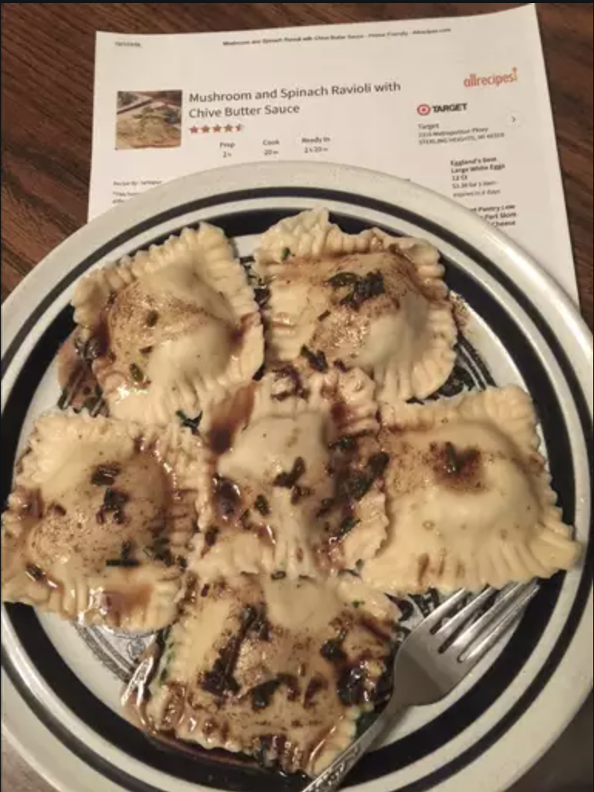

Mushroom and Spinach Ravioli with Chive Butter Sauce

Homemade veggie Ravioli
Easy Vegetarian Ravioli
This homemade ravioli is actually vegetarian, although no one who tries it can tell! The savory filling
contains three
different cheeses, mushrooms, and spinach. Although it's a rather time-consuming recipe to prepare, the
results are well
worth it!
Ingredients
1 teaspoon olive oil
1 1/2 tablespoons water, or more if needed
2 eggs
2 cups all-purpose flour, or more if needed
1/4 teaspoon salt
1 clove garlic, minced
1/2 cup chopped onion
8 oz package fresh mushrooms, coarsely chopped
1 tablespoon chopped fresh chives
1 tablespoon chopped fresh parsley
1/2 teaspoon ground cayenne pepper
salt and ground black pepper to taste
1 egg white, beaten
3 tablespoons butter
1 1/2 tablespoons chopped fresh chives
Steps
Whisk together 1 teaspoon olive oil, water, and whole eggs in a bowl until evenly blended; set
aside. Combine flour and
salt in a separate large bowl, and make a well in the center. Pour the egg mixture into the well and
stir just until
combined. Turn dough out onto a lightly floured surface and knead until smooth, 5 to 10 minutes,
adding more flour or
water as needed. Wrap dough tightly with plastic wrap, and set aside to rest.
Heat 1 teaspoon olive oil in a skillet over medium heat. Stir in the garlic and onion; cook and stir
until the onion
begins to soften, about 2 minutes. Add the mushrooms, and continue cooking and stirring until the
vegetables are soft
and the liquid has evaporated, about 10 minutes. Remove from heat, and allow to cool.
Beat cream cheese in a bowl until smooth. Stir in the cooled mushroom mixture, Parmesan cheese,
mozzarella cheese,
spinach, 1 tablespoon chives, parsley, and cayenne pepper. Season with salt and pepper.
Roll the pasta dough out to about 1/16 inch thick. Cut 3 to 4-inch circles using a large cookie
cutter. Roll each circle
out as thin as possible. Working with one circle at a time, brush the pasta lightly with the egg
white. Scoop about 1
heaping tablespoon full of the mushroom filling onto the center of the pasta, then cover with a
second piece of pasta,
pinching the edges to seal. Cut the sealed ravioli with the cookie cutter once more to create a
uniform shape. Place the
finished ravioli on a floured baking sheet, and repeat the process with the remaining pasta and
filling.
Fill a large pot with lightly salted water and bring to a rolling boil over high heat. Once the
water is boiling, stir
in the ravioli and return to a boil. Cook until the pasta floats to the top, 3 to 4 minutes; drain.
To make sauce: Melt butter in a skillet over high heat, cooking and stirring until browned, 5 to 7
minutes. Stir in 1
1/2 teaspoons chives. Serve over hot ravioli.